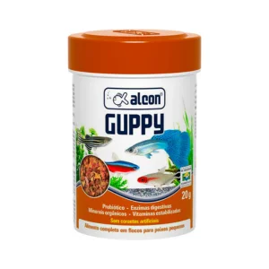

Alimento para Peixe Guppy 20g

- Preço
- R$ 29,90
- Marca
- Alcon Pet
- Peso
- 20 g
- Indicação
- Guppy é um alimento completo na forma de pequenos flocos recomendado para Lebistes e outros peixes de pequeno porte. Possui em sua composição minerais orgânicos quelatados que representam maior biodisponibilidade de minerais ao organismo dos peixes. Enzimas Digestivas e Prebiótico favorecem o desenvolvimento da flora intestinal benéfica, melhorando o aproveitamento dos nutrientes. Não contém corantes artificiais
- Posologia
- Fornecer quantidade a ser totalmente consumida em até cinco minutos, de duas a quatro vezes por dia
- Composição
- Farelo de soja, farinha de peixe, creme de milho, farinha de lula, adsorvente de micotoxinas, leveduras, óleo de soja refinado, espirulina desidratada, corantes naturais (cochonilha, urucum, cúrcuma) (1,54 %), proteína isolada de soja, premix vitamínico mineral (0,85 %), óleo de peixe, fécula de mandioca, cloreto de sódio, beterraba desidratada, farinha de minhoca, premix mineral (0,1 %), aditivo prebiótico (0,09 %), antioxidantes (Etoxiquin, Propilgalato, ácido cítrico, BHA, BHT), aditivo enzimático (0,05 %)